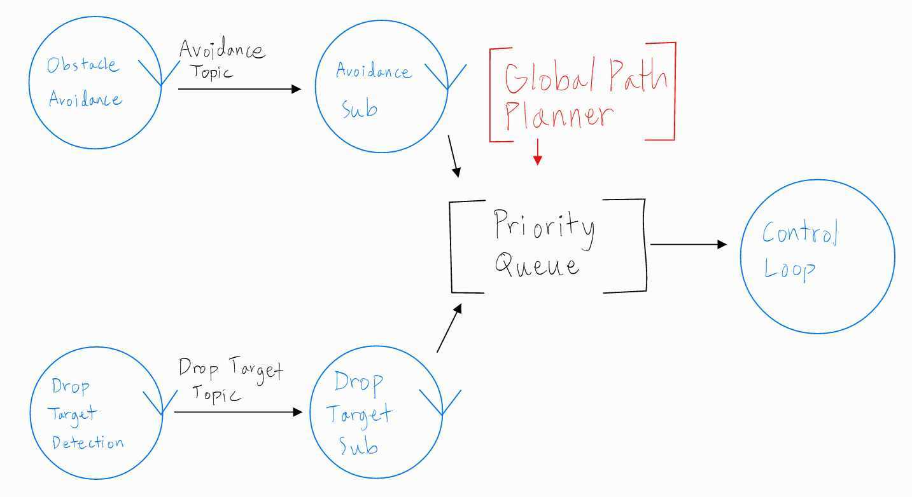
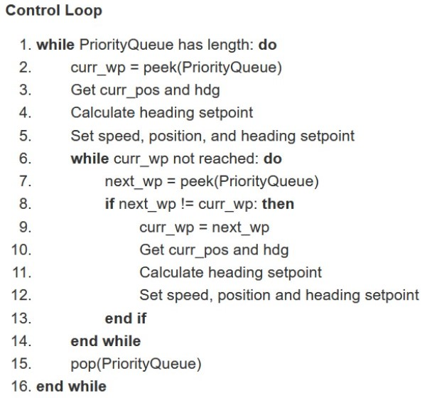

GNC Pipline and Control Loop for Autonomous Drones
The AUVSI SUAS is a yearly competition in which student teams must use the drones they have designed, built, and tested to autonomously complete several given tasks. For the 2022 competition, the main competition tasks include mission waypoints, obstacle avoidance, and drop targets. Alongside accurately passing through given waypoints, drones must be able to avoid potential obstacles (trees, birds, other drones), detect targets on the ground from 75 feet above the ground, and accurately and safely drop bottles on said targets. Most flight control software conveniently support "mission mode", which allows users to upload a pre-defined path that the drone will attempt to follow. However, such a feature is not suitable to execute the various of competition objectives. This necessitates a robust and dynamic control system/interface in which the drone is able to trigger changes in its flight pattern when certain events occur.
Above is the pipeline that describes the flow of information from the global path planner, obstacle avoidance, and drop detection processes to the control loop. The avoidance and drop detection processes publish corresponding waypoints to their respective ROS topics, which are taken in by subscribers. Since the three objectives of the competition hold different levels of priority, with the descending order being obstacle avoidance, global path, and drop targets, waypoints falling under these categories are assigned appropriate priority values and automatically sorted within a priority queue. The control loop constantly reads the queue for the highest priority waypoints and adjusts its flight path accordingly.
This is the algorithm for the control loop implementation. The basic idea is that the loop repeatedly searches the priority queue for a potentially higher priority waypoint while flying towards its current objective, and interrupts the current waypoint if one is found. Information of the drone's state and commands are all received and sent through the MAVROS subscriber and topic interface. ArduCopter supports MAVROS communication in its "guided mode".
Above is a demonstration of the pipeline working with a "dummy" obstacle avoidance waypoint.